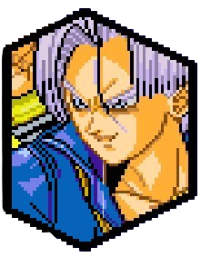
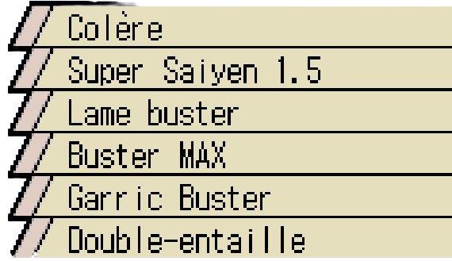
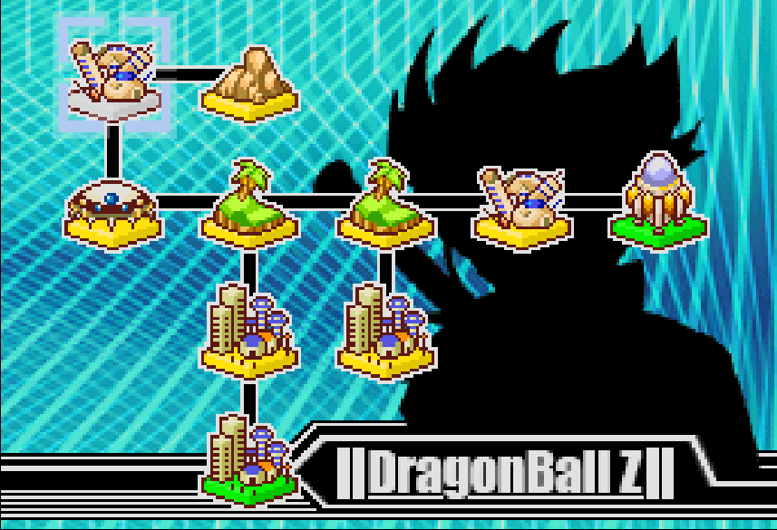
Dans un lointain futur, un jeune homme nommé Trunks est le dernier rempart face aux cyborgs créer par le Docteur Gero, ces derniers ont ravagés la Terre. Trunks décida de partir 20 ans dans le passé pour trouver Goku et vaincre les cyborgs, sa mère Bulma construisit la machine à voyager dans le temps, alors que les deux discutaient de la machine temporelle, les informations sur les cyborgs indiquèrent que les cyborgs ont détruit une nouvelle ville, Trunks s'empressa d'aller les affronter, malgré les paroles de sa mère lui dinquant qu'il ne fallait pas car n'étant pas suffisamment fort. A la fin du combat, comme l'avait signalé sa mère, les cyborgs étaient trop forts, Trunks a eu beaucoup de chances de survivre, c'est alors qu'il décida de partir dans le passé pour corriger tout ceci, Bulma lui parlait de Son Goku et de Vegeta, il dit au revoir à sa mère et s'en alla en pensant à quoi ressemble son père et comment est il dans ce passé différent du sien.
Débloque Trunks (Super Saiyan) comme personnage jouable.
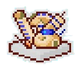
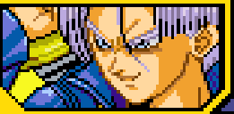


Quelques temps avant le voyage de Trunks, il possédait un mentor, un modèle, Gohan le dernier représentant de la famille de l'illustre Son Goku, les deux ont du survivre jusqu'à présent face au cyborg. Les deux s'entraînaient ensemble afin de pouvoir résister plus longtemps chaque jour. Après un bon entraînement, montrant les progrès de Trunks, un bruit sourd d'explosion se fit entendre, les cyborgs avaient encore frapper, Gohan devait partir pour les affronter, Trunks brulant de vouloir partir supplia Gohan de l'accompagner, mais Gohan savait que Trunks était la dernière lueur d'espoir, alors il le laissa et partit au combat, seulement il n'est pas revenu, laissant Trunks seul et rongé par la colère.
Débloque l'Attaque Ultime "Lame Buster".

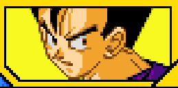
Après son voyage dans le passé, sur place il découvrit que Freezer était encore en vie et décida de l'affronter. L'affrontement fut bref, le tyran n'avait aucune chance et fut éliminé en un seul coup, laissant les guerriers Z autour bouche bée, mais aussi car il a montré que Goku n'était pas le seul Super Saiyan. Il ne restait que le Roi Cold qui malgré une demande d'alliance pour gouverner l'Univers, se solda par une mort toute aussi directe et rapide que pour son fils. Goku arriva quelques minutes après et les deux discutèrent et Goku apprendra l'histoire de Trunks, le fait qu'il est le fils de Vegeta, que Goku aura une maladie cardiaque et que dans 3 ans les cyborgs ravageront la Terre et ses habitants.
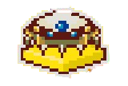
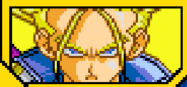
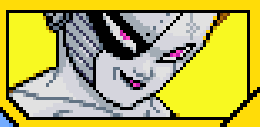
En allant dans le passé, Trunks avait bousculé certaines choses comme le fait que les cyborgs étaient plus fort que ceux de son époque, sans parler de la menace qu'était l'existencede Cell, ce dernier plus que troublé par tout ceci, décida de s'entrainer dans la Salle de l'Esprit et du Temps avec Vegeta et gagna en force. Prêts à affronter Cell, avec son père, mais voyant que Vegeta malmène Cell au point de le rendre misérable, il proposa à Vegeta de l'aider à absorbé C18 et de donner à Cell sa forme parfaite afin de lui offrir un "beau combat", ce que le prince orgueilleux accepta. Fou de rage Trunks se lança sur son père prêt à l'affronter.
Débloque l'Attaque Ultime "Big Bang Explosif"

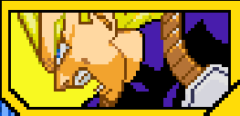
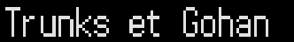
En battant Vegeta rapidement, Trunks put stopper Cell rapidement avec un seul coup. Après sa victoire, il décida de rentrer dans son futur, quand le jeune Gohan arriva et lui posa des questions sur sa version du futur, après avoir répondu à Bulma sur sa durée dans cette époque, un vaisseau géant flotte dans le ciel et soudainement Cooler, le frère ainé de Freezer apparait. Ce dernier était venu sur Terre pour venger la mort de son père et son frère
Débloque l'attaque combinée avec Gohan Ado "Double-entaille"

Battre Vegeta avant que le chrono soit à 1600 .
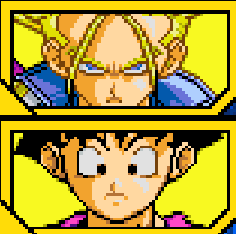
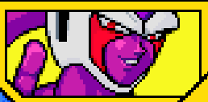
Troublé par ce que Vegeta a raconté au sujet de ce Trunks, Goku alla à sa rencontre. Etrangement face à Goku, Trunks ne montre aucune hostilité et raconta son histoire : il venait d'un autre futur, un futur où Vegeta met un terme à l'existence des cyborgs et ensuite vient à bout de Goku. Désormais sans ennemis, à l'image des cyborgs, il détruisait le monde et voyant qu'il n'avait plus aucun ennemi sur Terre, il est parti dans l'espace. Goku entend ceci fut choqué d'apprendre cette version de l'histoire et rassura Trunks en disant que ça ne ressemble pas à Vegeta, tout en rajoutant que pour que ce futur se concrétise il faut qu'il puisse le vaincre. Après avoir parlé tous deux s'en allèrent voir Vegeta et un nouveau combat reprit et les deux passèrent en Super Saiyan, Vegeta rajoute que s'il n'y avait point d'ennemi il s'ennuierait, de son côté Goku tenta de les arrêter car ils détruiraient tout, c'est à ce moment que Vegeta décida d'affronter Goku à la place de Trunks. Après un combat assez violent, Bulma arrive voulant assister au combat, mais dans le feu de l'action, elle a failli se prendre une attaque énergétique et contre toute attente, Vegeta la bloqua et put protéger Bulma. Trunks choqué par l'action de Vegeta, apprit de la bouche de Goku que Vegeta n'était nul autre que son père, la Bulma du futur sa mère ne voulait pas faire de la peine à son fils, lui cacha l'identité de son père, Trunks décida directement de retourner dans le futur et d'essayer de faire confiance à son père. C'est ainsi que cet autre Trunks retourna dans son autre futur. Que se passera t-il ? Nul ne le sait.
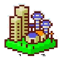
Terminer le combat contre Trunks .
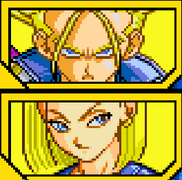
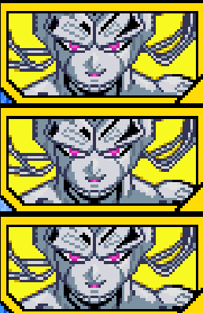
Malheuresement Trunks ne fut pas assez rapide pour empêcher que Cell n'absorbe C18, de ce fait Cell accèda à sa forme parfaite et humilia C16 et Vegeta, il ne restait que Trunks pour tenir, c'est alors qu'il prit la décision de montrer toute sa puissance acquise lors de son entraînement et se mit face à Cell et l'affronta malheuresement le cyborg était trop rapide, malgrés sa force. Cell impressioné par les progrès de Vegeta et Trunks, décide d'organiser un tournoi dans 10 jours afin de savoir qui est le plus fort.
Débloque l'Attaque Ultime de Vegeta (Mauvais) "Explosion finale" et Babidi comme personnage de support.
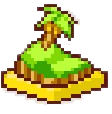
Après la défaite explosive de Cell face à Vegeta, le prince des Saiyans décida de se reposer sur ses lauriers, le monde est en paix et Vegeta s'y fait. En allant en ville avec sa famille, il rencontra Goku et Gohan qui lui feront remarqué qu'il n'est pas au top de sa forme, Vegeta énervé par cette remarque décide de montrer à Gohan maintenant ado, via un combat, s'il est vraiment aussi mal en point qu'il le prétend. Durant le combat, Gohan dit ouvertement devant Vegeta qu'il n'est plus aussi fort qu'avant, alors sous la remarque de Gohan, Vegeta essaya de se transformer en Super Saiyan, à sa grande surprise, Vegeta n'arrivait plus à se transformer en Super Saiyan.

Battre Cell 2e Forme en lui infligeant un Ultimate Ko.

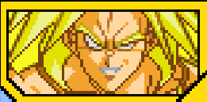
Alors que la bataille face à Boo battait son plein, Gohan et Gotenks avaient perdu face à Boo et se firent absorbé, il est devenu trop puissant, vegeta fut ramené pour 24h sur Terre et Goku reçut l'énergie du Vieux Kaioshin et partent combattre Boo, mais même eux n'étaient pas assez forts à deux pour vaincre le Majin .Après avoir retirer les enfants du corps de Boo, le démon détruisit la Terre. Vegeta et les autres se téléportèrent dans le monde des Kaioshins et demanda à Goku de faire un Genkidama, le temps Vegeta que rettient Boo du mieux qu'il peut, mais il y avait également Boo et Mr Satan pour aider à convaincre les terriens et retenir Boo .En combattant Boo et voyant le mpal que Goku se donne pour réussir, il se rendit compte que lui il se bat pour sa fierté alors que Goku se bat pour l'avenir de l'Univers. Après que Goku demanda avec Mr Satan aux terriens de donner leur énergie, le Super Genkidama fut prêt et éradiqua Boo complètement. Ce combat fit comprendre à Vegeta le vrai sens de la force et continua son entraînement pour un jour surpasser Kakarot.

Alors que la bataille face à Boo battait son plein, Gohan et Gotenks avaient perdu face à Boo et se firent absorbé, il est devenu trop puissant, vegeta fut ramené pour 24h sur Terre et Goku reçut l'énergie du Vieux Kaioshin et partent combattre Boo, mais même eux n'étaient pas assez forts à deux pour vaincre le Majin .Après avoir retirer les enfants du corps de Boo, le démon détruisit la Terre. Vegeta et les autres se téléportèrent dans le monde des Kaioshins et demanda à Goku de faire un Genkidama, le temps Vegeta que rettient Boo du mieux qu'il peut, mais il y avait également Boo et Mr Satan pour aider à convaincre les terriens et retenir Boo .En combattant Boo et voyant le mpal que Goku se donne pour réussir, il se rendit compte que lui il se bat pour sa fierté alors que Goku se bat pour l'avenir de l'Univers. Après que Goku demanda avec Mr Satan aux terriens de donner leur énergie, le Super Genkidama fut prêt et éradiqua Boo complètement. Ce combat fit comprendre à Vegeta le vrai sens de la force et continua son entraînement pour un jour surpasser Kakarot.
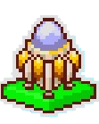
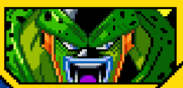